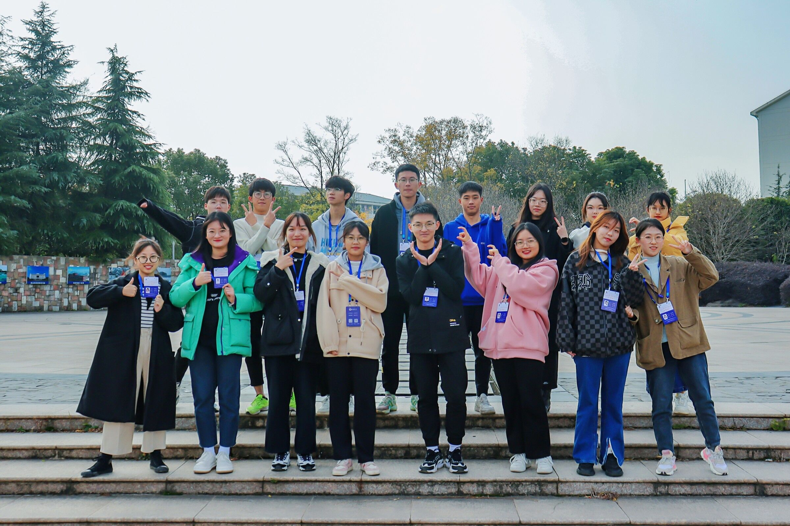
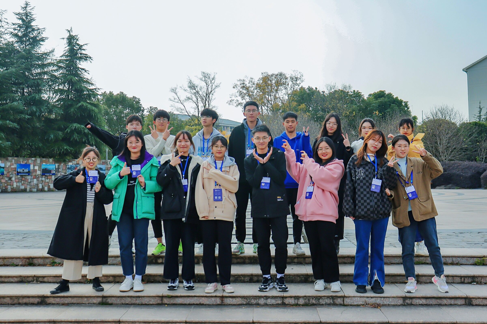

生活中我是一个乐观积极的人,热爱运动，喜欢跑步以及各种球类运动（篮球、足球、网球等），目前在学校的龙舟队，下面是运动的图片与视频：
 我是一个乐观积极的人,我喜欢和别人打交道，也乐于尝试新鲜的事情，对于自己感兴趣的事物我会非常努力的去追求，去探索，我在大一上半学期担任了班级的安全委员，在班级的管理中我尽到了自己的责任，帮助辅导员管理班级，完成自己手头上的工作，并配合其他班委的工作，协助陪同辅导员检查违禁电器，负责课前点名工作，检查班级人数，晚查寝情况，保障每一位同学的安全。
我还积极参与学校的志愿活动，并有幸加入了学校的28届学生工作助理团队，帮助学生工作处的老师的工作。在各个会场和各种活动中认识了很多的老师和同学，同时也学习到许多平时没有接触过的知识，锻炼了自己，提升了自己的能力，还认识到许多其他专业的同学，和他们成为了朋友。

我是一个乐观积极的人,我喜欢和别人打交道，也乐于尝试新鲜的事情，对于自己感兴趣的事物我会非常努力的去追求，去探索，我在大一上半学期担任了班级的安全委员，在班级的管理中我尽到了自己的责任，帮助辅导员管理班级，完成自己手头上的工作，并配合其他班委的工作，协助陪同辅导员检查违禁电器，负责课前点名工作，检查班级人数，晚查寝情况，保障每一位同学的安全。
我还积极参与学校的志愿活动，并有幸加入了学校的28届学生工作助理团队，帮助学生工作处的老师的工作。在各个会场和各种活动中认识了很多的老师和同学，同时也学习到许多平时没有接触过的知识，锻炼了自己，提升了自己的能力，还认识到许多其他专业的同学，和他们成为了朋友。
